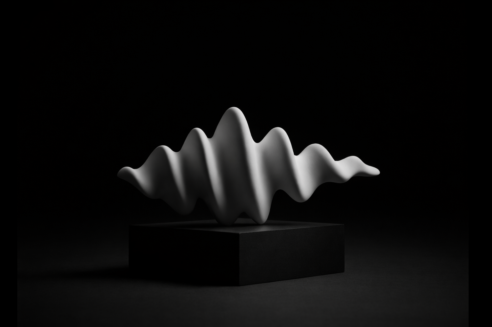

Branding sonoro con criterio creativo y precisión técnica.
No es solo un audio logo: es un sistema de identidad sonora que recorre todos los puntos de contacto de la marca. Diseñamos la voz que conecta y se recuerda.
Las marcas que articulan una identidad sonora coherente generan más reconocimiento, recordación y conexión emocional en cada punto de contacto.

Quiénes Somos
Creatividad artística con rigurosidad técnica.
Las marcas multisensoriales resuenan más. En Niebla partimos de la estrategia de marca —no solo de la música— para construir una identidad sonora integral: desde el audio logo hasta la música en espera, las señales de producto y la voz en cada punto de contacto.
-
analytics
Análisis Estratégico
Auditoría sónica profunda para alinear el sonido con los valores de marca.
-
waves
Diseño de Autor
Composiciones exclusivas que evitan los clichés de las librerías genéricas.
"Un gran sonido no solo se escucha: se reconoce, se recuerda y se siente."
Qué Hacemos
Servicios de precisión sónica.
La identidad sonora tiene vocación integral: música, diseño sonoro para señales y alertas, y la voz como activo de marca en todos los canales.
Producción Musical
- COMPOSICIÓN ORIGINAL
- ARREGLOS ORQUESTALES
- PRODUCCIÓN DE ARTISTAS
Producción Comercial
- SPOTS DE TV / RADIO
- POST-PRODUCCIÓN
- LOCUCIÓN PROFESIONAL
Branding Sonoro
- AUDIO LOGOS Y LOGOTIPOS SÓNICOS
- SISTEMA SONORO EN PUNTOS DE CONTACTO
- CURADURÍA Y VOZ DE MARCA
Diseño Sonoro
- SEÑALES Y ALERTAS DE MARCA
- SONIDOS UX/UI Y ASISTENTES DE VOZ
- ATMÓSFERAS Y SFX
"No improvisamos: diseñamos sonido con intención."
Arquitectura de Audio
Psicología Auditiva
Fidelidad Absoluta
Proceso editorial de creación
Escuchamos.
Inmersión profunda en la marca, sus competidores y sus objetivos estratégicos a largo plazo.
Establecemos el ADN sónico y las directrices estratégicas que guiarán toda la arquitectura auditiva.
Definimos.
Creamos.
Composición y diseño de propuestas creativas originales, alejadas de clichés y librerías genéricas.
Ajustes técnicos de alta precisión y pruebas de aplicación en diversos entornos y medios digitales.
Refinamos.
Entregamos.
Manual de uso sónico integral y activos finales masterizados con estándares de fidelidad absoluta.
A quiénes trabajamos
Eleve la dimensión sensorial de su marca hoy mismo.
Un código sonoro propio, declinado en cada canal con rigor. Confianza, consenso y un sistema que perdura más allá de una sola pieza musical.